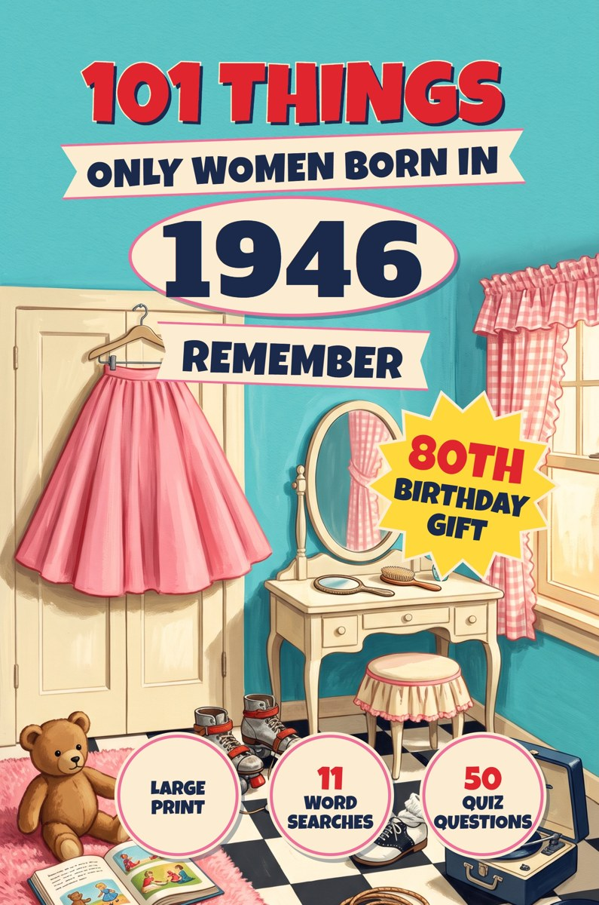

She was born in 1946. Give her back the girl she was.
Printed and shipped by Amazon. Scroll down to look inside first.
8 real pages from the printed book. Tap any page to see it full size.
This is the 80th birthday gift she will actually sit down with. One hundred and one short chapters take her from the year she arrived to the summer she turned thirty, and every one is tied to how old she was at the time. Paper dolls and roller skates with a key. The first television on the block. Saddle shoes, charm bracelets and sleeping on rollers. Record hops, prom night and the Class of 1964. Her first paycheck, her wedding years and the night the whole country watched the Moon.
Every chapter gives her something to do. A quick quiz, three boxes to tick, or lines to fill in with her own memories. Every chapter also has an Ask Her question, so the family can sit beside her and hear the stories that are not written down anywhere.
Made for 80 year old eyes. The whole book is set in true large print, 16 point, including the quizzes, the puzzles and the answers. The pages are a comfortable 6 by 9 inches with wide margins and room to write.
What is inside: 101 dated memories of an American girlhood and young womanhood, from 1946 to 1976 A gift page for your message 1946 at a Glance, the year she was born 11 word searches with solutions 5 Birthday Table Quizzes, 50 questions to read out loud at the party Her Soundtrack, the biggest hit of every year from age 5 to 25 Keepsake pages and a My Story section in her own handwriting Pencil drawings throughout
Dates and figures were checked against published sources.
A thoughtful present for a mom, grandma, wife, sister, aunt or old friend who is turning 80. Write your message on the gift page, wrap it up, and be ready to listen.